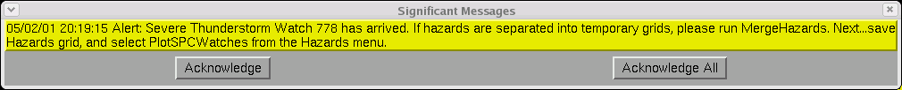

SPC Severe Convective Watches
Provided by: Dave Metze, Senior Meteorologist, NWS
Pueblo, CO
Update 2 February 2005
Table of Contents
Introduction
SPC Issues a Coordination WCL Text Product
SPC Issues the WOU
Text Product
There is a new methodology for
including SPC severe
convective watches into the GFE's Hazards Weather Element. This
framework is part of the GFE's VTEC infrastructure. The methodology and
infrastructure were designed by Matt Davis(ITO/NWS ARX) and FSL
Developers. Below is an example of how this methodology works.
II. SPC Issues a Coordination WCL Text Product
Below is an example WCL text product that would be issued to coordinate a SPC severe convective watch with NWS field offices.
NWUS64 KWNS 041200
WCLA
.SEVERE THUNDERSTORM WATCH A
COORDINATION COUNTY LIST FROM THE NWS STORM PREDICTION CENTER
EFFECTIVE UNTIL 1300 UTC.
MNC039-045-055-099-109-157-169-050000-
MN
. MINNESOTA COUNTIES INCLUDED ARE
MOWER OLMSTED WABASHA
WINOA
$$
ATTN...WFO...ARX...
After SPC issued the WCL text product, the GFE will provide the forecaster with a "yellow" alert banner(below).
Next, the forecaster will select "Acknowledge" on the
alert banner to close it. He or she will select Hazards =>
ViewWCL per the banner's
instructions, and then choose the appropriate WCL type (WCLA, WCLB,
WCLC). For more detailed information in the function of ViewWCL, click here.
Once "ViewWCL" is selected, then the proposed SPC watch will be shown via the "Watches" Weather Element(below). This Weather Element is created "on-the-fly" and can only be viewed in the GFE for SPC and NWS field office collaboration efforts.

After SPC and NWS field offices collaborate on the severe convective watch, SPC will issue the WOU text product.
III. SPC Issues the WOU Text Product
SPC will issue the official severe convective watch product via the WOU text product (example below).
WOUS64 KWNS 041230
WOU4
BULLETIN - IMMEDIATE BROADCAST REQUESTED
SEVERE THUNDERSTORM WATCH OUTLINE FOR WT 778
NWS STORM PREDICTION CENTER NORMAN OK
642 AM CST FRI FEB 04 2005
SEVERE THUNDERSTORM WATCH 799 IS IN
EFFECT UNTIL
600 PM CST
FOR THE FOLLOWING LOCATIONS
MNC039-045-055-099-109-157-169-050000-
/X.NEW.KARX.SV.A.0778.050204T1238Z-050205T0000Z/
MN
. MINNESOTA COUNTIES INCLUDED ARE
MOWER OLMSTED WABASHA
WINOA
$$
ATTN...WFO...ARX...
After the WOU text product is issued, a GFE "yellow" alert banner will pop up(below) notifying the forecaster to take action.

The forecaster will select "Acknowledge" and follow the instructions. He or she will select Hazards => PlotSPCWatches (below) per the banner's instructions. For more information on using the PlotSPCWatches procedure, click here.

After the forecaster selects "PlotSPCWatches," the
procedure will run without further feedback. It determines all valid
watches which are in effect for the forecast area, and plots them
directly into the Hazards grid. This includes changes made by the local
office via the WCN product, and changes by SPC via the WOU product.
Next, the forecaster would run the GFE WCN
Text Formatter and issue the product(below).